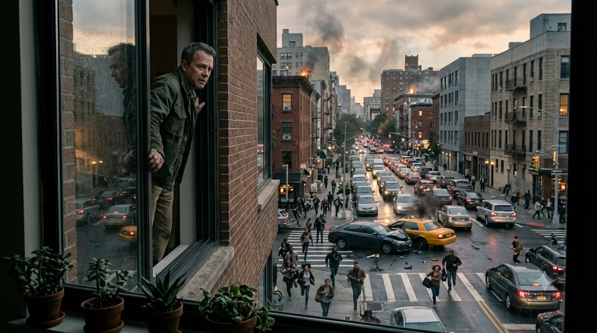
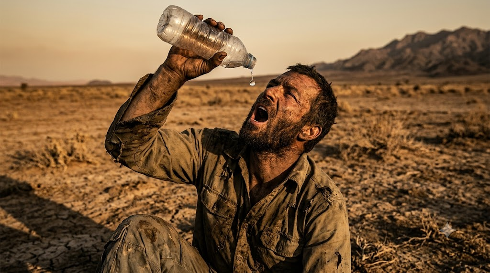
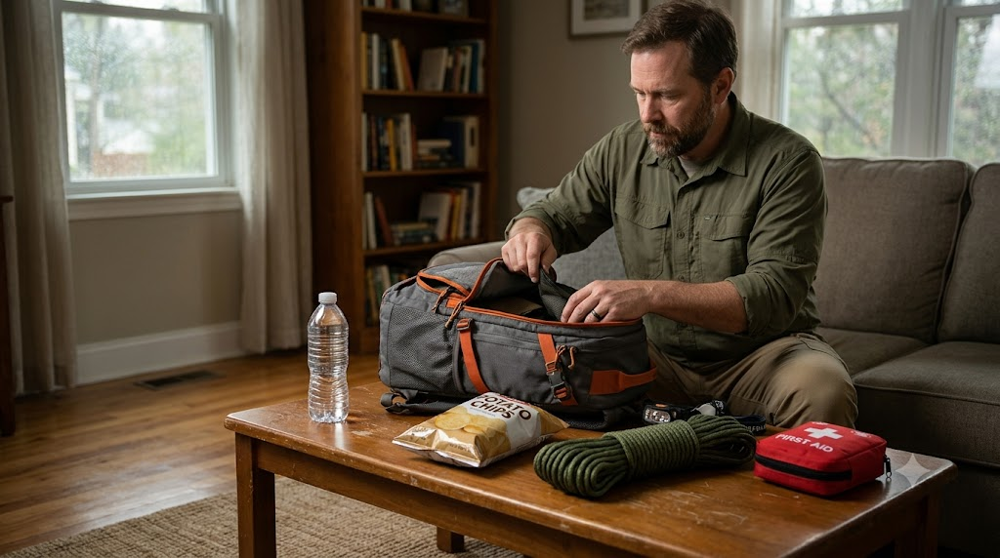
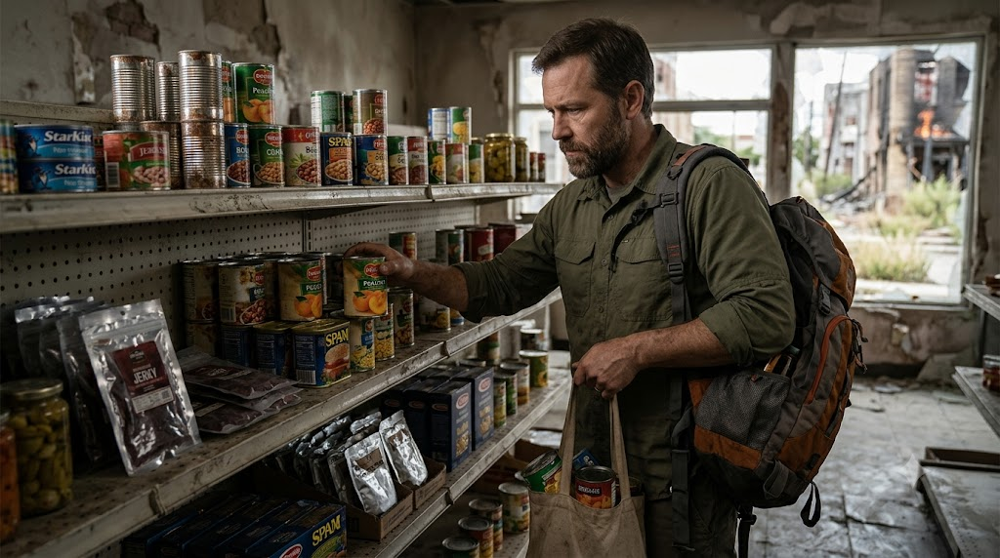
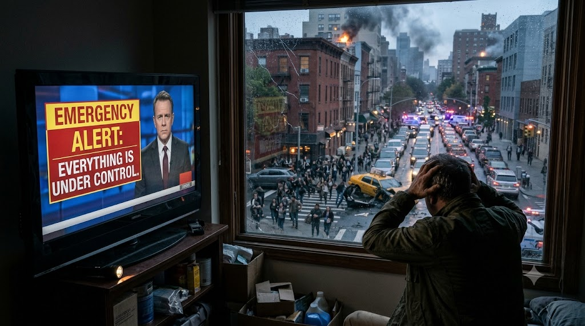
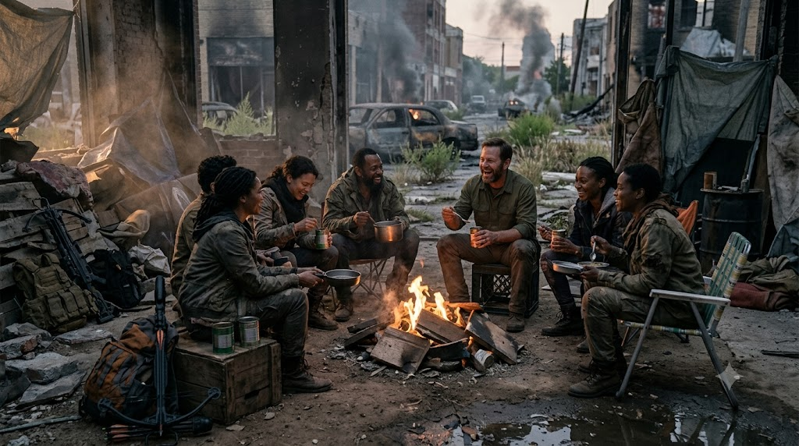
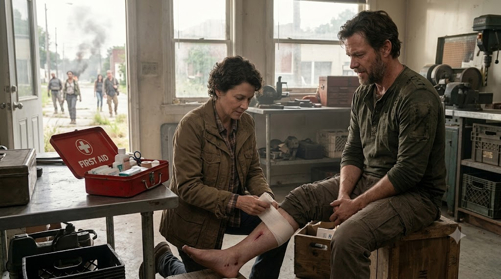
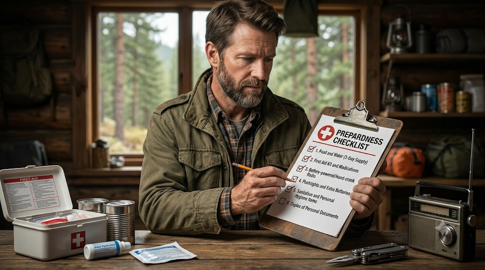

Survival Guides · Zombie Apocalypse
Could You Survive the First 72 Hours of a Zombie Apocalypse?

We've all watched those zombie shows where everything goes wrong in a matter of hours. One minute, people are going about their normal lives, and the next, the streets are full of chaos. Shops are being looted, roads are blocked, and nobody knows who to trust.
Now imagine that happening in real life.
What would you do first? Grab some food and water? Find a place to hide? Or just get in your car and drive as far away as possible? Or grab whatever first weapon you find and declare war on zombies? because thats what you were waiting for your whole life.
Honestly, it's easy to think we'd know exactly what to do until we're actually in that situation. Watching a character survive in a TV show is one thing. Making those decisions yourself, with no idea what's coming next, is something else entirely.
Of course, a zombie apocalypse is fictional. But some of the problems we see in these stories are very real. Power cuts, water shortages, panic, a lack of supplies, and not knowing what's going on can make any emergency much harder to deal with.
So let's imagine the first 72 hours of a zombie outbreak and look at some things that could actually help you survive. You might also discover that some of the things we see in zombie movies aren't such great ideas after all.
1. Don't Leave Home Just Because Everyone Else Is Running

Think about how many times you've watched a zombie show where people immediately jump into a car and try to escape the city. Sometimes it works. Other times, they end up stuck in traffic, run out of fuel, or discover that the place they're heading to is even more dangerous. It's easy to say, "I'd just get out of here," but where exactly would you go?
If your home is safe and you have enough supplies, staying put for a while might be a better choice than rushing into an unfamiliar situation. On the other hand, if there's a fire, flooding, structural damage, or an official evacuation order, staying could be the wrong decision.
The point is that you shouldn't make the decision just because everyone around you is panicking. It's worth having a basic plan before anything happens. Think about where you could go if you had to leave, which routes you could take, and how you'd contact your family if you got separated. And don't forget that the road you normally use might not be the best option during an emergency.
2. Water Could Become a Bigger Problem Than Food

When we think about surviving a zombie apocalypse, food usually comes to mind first. We imagine raiding supermarkets, searching abandoned houses, and collecting as many cans as we can carry. But what about water?
You can spend days thinking about which food to stock up on and completely forget how much water you'd need if the normal supply stopped working.
According to the US Centers for Disease Control and Prevention (CDC), a basic emergency supply should include at least one US gallon of water per person per day for three days. That's roughly 3.8 litres per person each day. For a family of four, that works out to around 45 litres of water for just three days. That's a lot more than most people probably keep stored at home. And remember, that's a basic recommendation. Hot weather, medical needs, pets, and other circumstances can mean you'll need more.
If you're storing water, use clean, suitable containers and keep them somewhere safe. Commercially bottled water is a reliable option. Also, don't assume water is safe to drink just because it looks clean. If authorities warn against using your water supply, follow their instructions. You can read more in the CDC's guide to creating and storing an emergency water supply.
In a zombie show, a character might run around collecting weapons while ignoring the water sitting in a nearby shop. In a real emergency, that could turn out to be a serious mistake.
3. Your Emergency Kit Doesn't Need to Look Like Something From a Movie

Zombie shows have a habit of making survival equipment look incredibly cool. Characters carry huge backpacks, collect all sorts of gear, and somehow find exactly what they need at the right moment. Real life isn't going to be that convenient.
You don't need to own every piece of survival equipment available. What matters is having the basics you'll actually use when something goes wrong. For a start, you should firstly focus on things like these:
- Drinking water and food that keeps well.
- A flashlight with spare batteries.
- A first-aid kit and any essential medicines.
- A charged phone and a power bank.
- A radio that can work without relying on mobile internet, where appropriate.
- Soap, hygiene products, and rubbish bags.
- Copies of important documents and emergency contact numbers.
- Some cash in case electronic payments stop working.
- Anything extra needed by children, older family members, pets, or people with specific medical needs.
You don't have to buy everything at once. Start with what you already have at home and work out what's missing.
It's also worth thinking about the emergencies common in your area. Someone who lives in a flood-prone area will need to prepare differently from someone who regularly deals with extreme cold or storms.
One more thing: don't pack your supplies away somewhere you'll never find them again. An emergency kit won't help much if you have to empty half your cupboard to locate it. The CDC's personal emergency needs guide is a useful place to start when planning for your household.
4. Don't Collect Food You Won't Know What to Do With

Imagine having to leave home in a hurry and stuffing your bag with food like meat, chicken and fresh vegetables. Sounds like a great plan, right?
Not so much if the electricity is out, you don't know how to start fire without lighter or matchbox, you don't have access to a safe cooking area, or you need to keep moving.
For the first few days of an emergency, food that requires little preparation can be much more convenient. Think ready-to-eat foods, suitable canned goods, crackers, dried fruit, and other items that store well. And please, don't forget the can opener if you're packing cans.
It also makes sense to store food you actually enjoy eating. There's no point buying a load of things that will sit untouched until they expire. Check the expiry dates every now and then and replace anything that's no longer usable. If someone in your household has allergies or needs a special diet, make sure your emergency supplies take that into account too.
You should also think about how you'll prepare food if your normal cooking facilities aren't available. Anything that needs water or heating might be less convenient than it first appears. Nobody needs a perfectly organised survival pantry. You just want enough suitable food to get through a disruption without immediately having to search for a shop that's still open.
5. Don't Believe Every Rumour You Hear

Imagine the outbreak has just started. Someone on social media claims there's a safe shelter outside the city. Another person says the roads are closed. A third claims the whole thing is under control. Now what?
In zombie movies, characters often make huge decisions based on a rumour they heard five minutes earlier. Sometimes the information is correct. Sometimes it gets them into serious trouble. During a real emergency, bad information can cause problems too.
Try to know in advance where you'll get reliable updates. Depending on where you live, that could mean official emergency alerts, local authorities, weather services, or trusted news broadcasters. It's also sensible to keep important phone numbers somewhere you can access without an internet connection. If your phone battery dies or mobile data stops working, you don't want to discover that all your important information was stored in one place.
Of course, you shouldn't waste time investigating every rumour when there's an immediate danger. If emergency services issue an urgent warning, take it seriously.
But there's a difference between responding to a genuine warning and making a risky decision because a random post says everyone should leave town.
6. Being a Lone Survivor Sounds Cool Until You Need Help

Almost every zombie show has that one character who trusts nobody. They travel alone, avoid other people, and believe that staying away from everyone is the safest option. And sometimes, you can understand why. In a dangerous situation, trusting the wrong person can create problems.
But being completely alone has its own disadvantages. What happens if you get injured? What if you need help moving supplies? What if someone in your family needs medical attention while you're dealing with another problem? Even the most capable person has limits.
Having a few trusted people you can contact during an emergency can make a real difference. It could be family members, friends, or neighbours who are willing to check on one another and share information. You don't need to trust every stranger you meet, and you certainly shouldn't put yourself in danger just to help someone. But assuming that you must handle absolutely everything alone isn't a great plan either.
This sort of planning might sound unnecessary when everything is going well. But it's much easier to discuss it now than when everyone is stressed and trying to figure out what to do.
7. Staying Safe Matters More Than Having the Best Gear

One thing zombie shows make look easy is improvising solutions under pressure. A character finds a random object, comes up with a clever idea, and somehow gets everyone out of trouble. Real life doesn't always work that way.
Trying something risky when you're already dealing with an emergency can turn one problem into two. An injury, for example, might leave you needing help when medical services are already under pressure.
It's better to think about basic safety before you need it. Know where your first-aid supplies are. Keep important documents accessible. Make sure your emergency equipment works. Learn how to receive local warnings and understand what to do if authorities tell you to evacuate or shelter in place.
And don't assume that something is safe just because you've seen a character do it in a show. Your plan should also be checked from time to time. Batteries run out, food expires, phone numbers change, and people develop new medical needs. You don't need to spend every weekend preparing for disaster. Just take a little time every few months to check that your supplies and plans still make sense.
For more information, Ready.gov has useful guidance on emergency kits and household preparedness. You should also check the official emergency guidance relevant to your own country.
8. What Can We Actually Learn From Zombie Movies?
Let's be honest: zombie movies and shows don't always follow the rules of reality. Depending on the story, zombies might move quickly, slowly, or in ways that would make no biological sense at all.
That's part of the fun.
But there's a reason survival stories can get us thinking about real emergencies. They show what can happen when basic services disappear, supplies become difficult to find, and people have to make decisions without knowing what comes next.
They also show how easily a character can get into trouble by ignoring a warning, trusting the wrong person, or refusing to change a plan that clearly isn't working.
At the same time, you shouldn't treat every survival trick in a TV show as practical advice. A fictional character might survive an incredibly risky situation because the story requires it. That doesn't mean the same decision would be sensible in real life.
There's no single trick that guarantees survival in every emergency. A plan that works during a power cut might be completely unsuitable during a flood.
The useful lesson is to understand the risks around you, prepare for the problems that are most likely to affect you, and be ready to adapt when things don't go as expected.
And that's something even a zombie fan can take away from all those hours spent watching fictional survivors make one questionable decision after another.
Your First 72-Hour Survival Checklist

So, how prepared are you right now?
You don't need to imagine every possible disaster to answer that question. Just go through this checklist and see how many of these things you've already taken care of.
You don't have to get everything perfect in one day. Even sorting out a few of these things is a useful start.
Just remember that this is a general checklist, not a guarantee of safety. What you need will depend on where you live, who lives with you, and the kind of emergency you're preparing for.
So, Would You Survive the First 72 Hours?
After watching enough zombie shows, it's tempting to think we'd all be ready to handle an outbreak. We know what supplies to look for, which mistakes to avoid, and when a character is about to make a terrible decision.
But it's a different story when you're the one who has to make those decisions.
You might have plenty of supplies but no idea where to go. You might have a good plan that suddenly stops working. Or you might discover that something you thought was essential isn't nearly as useful as you expected.
That's why preparation matters more than trying to predict every possible problem.
You don't need to be the strongest person in the group or have the biggest collection of survival gear. Knowing your risks, keeping some basic supplies ready, getting reliable information, and being able to adapt are all useful places to start.
And luckily, we don't have to wait for a zombie outbreak to practise those habits.
This article is for general information and entertainment. It does not replace official emergency guidance or advice specific to your location.
Sources and Further Reading
Suggested Quizzes
Ready for another challenge? Try one of these apocalypse and survival quizzes.